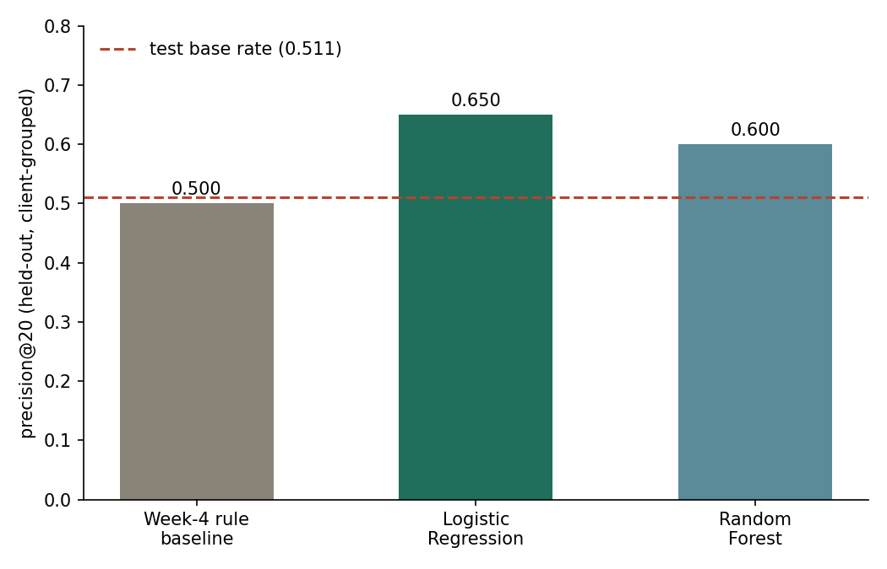
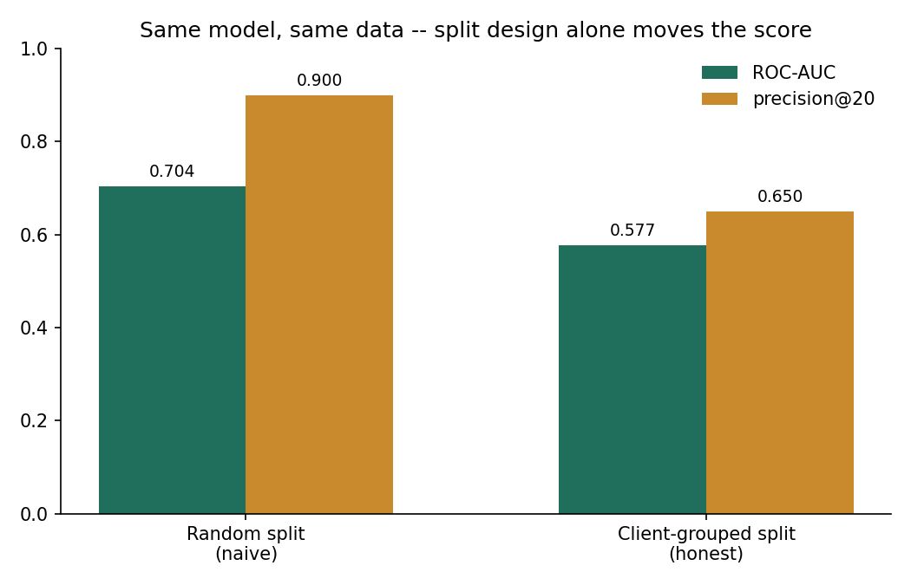
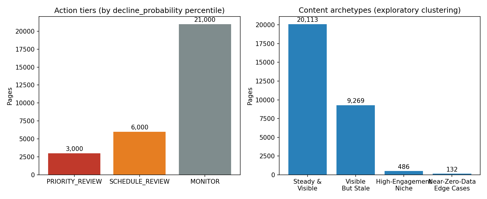

Introduction
A content team with a few thousand published pages, and one afternoon a week for refresh work, cannot manually review every page. Someone has to decide what gets looked at first. In practice, that decision is usually a rule of thumb applied by eye: it's old, it still gets traffic, worth fixing.
An editor opens the CMS on a Monday morning with thirty thousand pages and one afternoon to work through them. The rule they've always used says an old page that's still visible is worth a look. Nobody has actually measured whether that rule catches the pages that are declining, or just feels right.
I wanted to know if that rule actually holds up, so I built it properly and checked the signals behind it against real outcomes. Then I asked a harder question: once a rule is validated, does a model trained on the same data, checked the same way, earn the right to replace it? Yes, with a catch, and the catch is the more useful of the two results.
Data
The source is the FlyRank ML Internship starter dataset: 30,000 pseudonymized content pages across 32 clients, one row per page, with trailing-90-day search (GSC-style) and engagement (GA4-style) metrics. A larger, 78.8-million-row daily-grain warehouse also exists behind the same project; it was used earlier in this work to verify schema and grain assumptions, but the starter export is what this pipeline is built on, because its columns match the feature set the baseline and model both depend on.
Population
Two filters define the working population: impressions_90d > 0 (the page
has real search visibility to judge) and content_age_days >= 90 (the page
is old enough to have a genuine 90-day trend to measure). On this dataset, every one of the
30,000 rows already satisfies both conditions.
Excluded on purpose
trend_direction and trend_pct (the columns the target label is
built from), along with the raw *_last_30d / *_prev_30d windows
those come from, are excluded from every feature set in this project. Section 3 shows what
happens when they're added back in.
Public safety
client_id and content_id arrive pre-pseudonymized in the source
data. They're used only to group the validation split, never as a model feature, and no
client names, URLs, or raw search queries appear anywhere in this project or its repo.
Methodology
Label
is_declining_label = 1 where trend_direction == "down". Nobody
observed a page actually declining; this is a rule applied to a 30-day-vs-prior-30-day
impression comparison, and it gets measurably noisier at low impression counts (see
Limitations).
Baseline: a transparent rule
The baseline gates on two conditions: impressions_90d >= 500 (a reliability
floor: a separate check found that traffic volume on its own does not predict
decline in a usable direction, so it's there to keep measurements trustworthy, not to score
anything itself) and days_since_last_update >= 90 (the threshold the
large-sample buckets actually confirmed: pages at 91–180 days since update declined at
61%, against 51% for pages updated in the last 30 days). A below-tier-median click-through
rate adds a secondary bonus to the score.
Building this rule also caught a data trap: rows with avg_position == 0
("no position data") were silently sorting into the top position tier, which would have
corrupted any CTR-vs-position comparison built on it. The rule's CTR check excludes those
rows explicitly.
Model
Logistic Regression over 22 numeric and 10 categorical features, all current-state, trailing-90-day totals or point-in-time tiers, never a 30-day window. A Random Forest was trained alongside it as a stronger, less transparent comparison.
Validation design
The split is a GroupShuffleSplit (80/20) grouped by client_id,
holding entire clients out instead of individual pages. This isn't cosmetic. A naive
random row split let 31 of the 32 clients appear in both train and test, and every
metric inflated because of it: ROC-AUC hit 0.704 against the grouped split's honest 0.577,
and precision@20 hit 0.900 against 0.650. Figure 2 shows this side by side.
Leakage checks
Adding trend_pct back into the honest feature set (the literal column the
label is thresholded from) pushed ROC-AUC from 0.577 to 0.989. Adding the raw 30-day
windows pushed it to 0.836. Both confirm the checking method actually works, and that the
real feature set used throughout this project is clean.
Results
All three approaches (the rule baseline, Logistic Regression, and Random Forest) are scored on the exact same held-out, client-grouped slice.
| Model | precision@20 | precision@50 | precision@100 | ROC-AUC | Avg Precision |
|---|---|---|---|---|---|
| Week-4 rule baseline | 0.500 | 0.520 | 0.470 | 0.489 | 0.508 |
| Logistic Regression | 0.650 | 0.640 | 0.670 | 0.577 | 0.567 |
| Random Forest | 0.600 | 0.580 | 0.530 | 0.602 | 0.582 |
| (test-slice base rate) | 0.511 | 0.511 | 0.511 | — | — |
Table 1. All models scored on the same 80/20 client-grouped held-out split. Bold row is the recommended model.


The rule that looked strong on its own tuning population in an earlier pass (precision@20 of 0.650, measured across all 30,000 rows it was built against) drops to base rate on seven completely unseen clients. Logistic Regression wins at every precision@K cut that matters for a queue an editor works top-down. Random Forest does better on whole-ranking measures — ROC-AUC and Average Precision — but loses to Logistic Regression specifically where it counts. Added complexity didn't earn its keep here. I'd deploy the simpler, more readable model.
Limitations
is_declining_labelis a proxy for decline, not ground truth. It's a threshold on a noisy 30-day swing, and error analysis found a false negative built on a single impression: a page with essentially no data still carrying a confident label.- These numbers come from a single client-grouped 80/20 partition. That's real evidence, though not a guarantee across every possible split. Repeated group splits would strengthen the claim further.
- This is a cross-sectional snapshot, not a time series. Nothing here supports "refreshing this page will increase its traffic." The honest, decision-support version of the claim is that a page looks worth reviewing first, for a stated reason.
- The random-vs-grouped gap in section 4 is itself evidence that performance on a client outside this training population should be treated cautiously until it's spot-checked locally, since it hasn't been validated on a brand-new client yet.
- This system models a portfolio's own observed performance patterns. It says nothing about how a search engine's ranking algorithm actually works.
- Which AI model or content-type category a page used showed up among the features the model leans on, but sample sizes per category are small and uneven, which isn't enough evidence to say anything about any one tool's output quality.
Ranked recommendations
The deployed playbook retrains the validated Logistic Regression on the full population, attaches a reason code drawn only from actionable features (staleness, CTR, position, engagement, and word count, never content type or which AI model wrote the page), and sorts by a value-weighted score instead of raw probability.
Content archetypes
Steady & Visible
High impressions, recently updated, near-base decline rate. Routine monitoring, no urgent action needed.
Visible But Stale
Highest average impressions of any group, but ~106 days since update and the highest decline rate observed. The primary refresh target.
High-Engagement Niche
Lower volume, but CTR and engagement far above every other group. Worth protecting and studying, not refreshing.
Near-Zero-Data Edge Cases
Averaging 4 impressions per 90 days, so any rate computed here is a measurement artifact. Excluded from automated scoring entirely.

Human review, required before any action
Before anyone acts on a row, someone should check that the page isn't already deprecated, redirected, or scheduled for removal, and that the reason code still holds up on a manual look — a page updated just outside this snapshot's window can show up as stale by mistake. Worth checking too: whether impressions and clicks are anywhere near the reliability floor, and whether what looks like decline is really just an expected seasonal dip.
What should never be automated
- This queue should never trigger auto-editing, auto-publishing, auto-redirecting, or auto-deleting content on its own. Every action routes through a human editor.
- Rows in the Near-Zero-Data Edge Cases archetype shouldn't be acted on at all, whether automated or flagged as a manual priority; they should be excluded from the queue entirely.
- Content type and which AI model authored a page shouldn't be used to justify deprioritizing that pipeline. Sample sizes per category are too small and uneven to support that kind of claim.
- A high score here means "associated with decline in this data," and it shouldn't be read as a prediction that a page will decline.
Monitoring and retrain triggers
Precision@20/50/100 should be re-measured monthly against newly-resolved pages and compared against the 0.650/0.640/0.670 established here; a meaningful drop is the signal to investigate. A shift in the population's 0.542 base decline rate signals either a real portfolio change or an upstream data change, either way worth checking before trusting the score again. Any client not represented in the training population should get a local spot-check before the queue is trusted for them instead of waiting for the next quarterly retrain.
Reproducibility
Every number on this page traces back to a notebook in the linked repository. Random seeds
are fixed at random_state=42 throughout; a fresh clone plus
pip install -r requirements.txt reproduces every table and figure here.
- w04_baseline_score.ipynbthe transparent rule baseline and its signal checks
- w05_model.ipynbLogistic Regression and Random Forest, grouped split
- w06_validation_audit.ipynbrandom-vs-grouped split audit and leakage checks
- w07_action_playbook.ipynbthe deployed action playbook and archetypes
- capstone.ipynbthe condensed end-to-end rerun this page mirrors
- repository rootfull source, data contract, and skills used